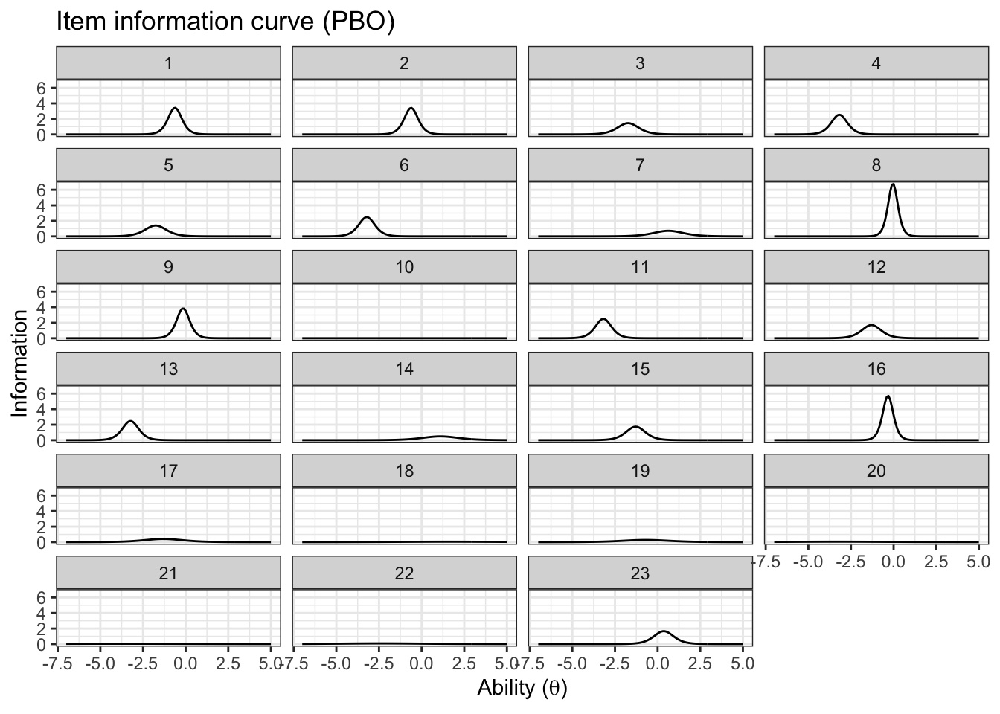
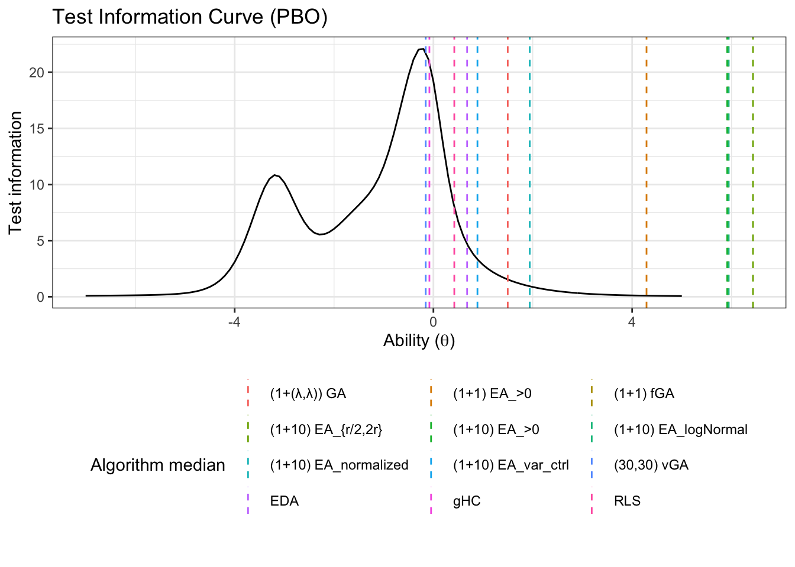

Chapter 5 Case study II: PBO
5.1 Importing the data
To illustrate and make the analysis we will use 5 as the number of dimensions for the benchmark functions
d_pbo <- read_csv('data/pbo.csv') %>%
select(algId, DIM, funcId, runs, succ, budget) %>%
filter(DIM==16) %>%
mutate(algId_index = as.integer(as.factor(algId)))
#vector with the names in order
benchmarks <- seq(1,23)
algorithms <- levels(as.factor(d_pbo$algId))5.2 Preparing the Stan data
pbo_standata <- list(
N = nrow(d_pbo),
y_succ = as.integer(d_pbo$succ),
N_tries = as.integer(d_pbo$runs),
p = d_pbo$algId_index,
Np = as.integer(length(unique(d_pbo$algId_index))),
item = as.integer(d_pbo$funcId),
Nitem = as.integer(length(unique(d_pbo$funcId)))
)irt2pl <- cmdstan_model('models/irt2pl.stan')
fit_pbo <- irt2pl$sample(
data= pbo_standata,
seed = seed,
chains = 4,
iter_sampling = 4000,
parallel_chains = 4,
max_treedepth = 15
)
fit_pbo$save_object(file='fitted/pbo16.RDS')To load the fitted model to save time in compiling this document
fit_pbo<-readRDS('fitted/pbo16.RDS')5.3 Diagnostics
Getting the draws from the posterior
draws_a <- fit_pbo$draws('a')
draws_b <- fit_pbo$draws('b')
draws_theta <- fit_pbo$draws('theta')5.3.1 Traceplots
mcmc_trace(draws_a)mcmc_trace(draws_b)mcmc_trace(draws_theta)5.3.2 Rhat and Effective samples
fit_pbo$summary(c('a','b', 'theta')) %>%
kable(caption='Summary values fit of the model, including effective samples and Rhat',
booktabs=T,
digits =3,
format='html') %>%
kable_styling() %>%
scroll_box()| variable | mean | median | sd | mad | q5 | q95 | rhat | ess_bulk | ess_tail |
|---|---|---|---|---|---|---|---|---|---|
| a[1] | 3.934 | 3.707 | 1.837 | 1.837 | 1.355 | 7.305 | 1.000 | 10482.518 | 6617.247 |
| a[2] | 3.937 | 3.701 | 1.817 | 1.798 | 1.391 | 7.285 | 1.000 | 11107.081 | 6472.795 |
| a[3] | 2.713 | 2.411 | 1.483 | 1.351 | 0.885 | 5.567 | 1.000 | 12066.342 | 9175.795 |
| a[4] | 3.464 | 3.189 | 1.716 | 1.665 | 1.192 | 6.686 | 1.000 | 21378.536 | 10784.405 |
| a[5] | 2.706 | 2.367 | 1.511 | 1.370 | 0.888 | 5.625 | 1.000 | 10187.985 | 8808.061 |
| a[6] | 3.460 | 3.155 | 1.728 | 1.671 | 1.196 | 6.756 | 1.000 | 22233.362 | 11142.743 |
| a[7] | 1.777 | 1.699 | 0.565 | 0.532 | 1.006 | 2.816 | 1.000 | 9235.783 | 11044.112 |
| a[8] | 5.405 | 5.220 | 1.727 | 1.693 | 2.877 | 8.540 | 1.000 | 12518.009 | 11842.410 |
| a[9] | 4.112 | 3.928 | 1.424 | 1.379 | 2.097 | 6.707 | 1.000 | 11774.405 | 10021.930 |
| a[10] | 0.062 | 0.059 | 0.031 | 0.029 | 0.015 | 0.117 | 1.000 | 6929.124 | 3558.016 |
| a[11] | 3.449 | 3.170 | 1.692 | 1.636 | 1.206 | 6.663 | 1.000 | 20504.043 | 11361.605 |
| a[12] | 2.916 | 2.611 | 1.593 | 1.532 | 0.900 | 5.968 | 1.000 | 10505.108 | 7419.611 |
| a[13] | 3.449 | 3.151 | 1.722 | 1.662 | 1.202 | 6.678 | 1.000 | 21554.343 | 11428.768 |
| a[14] | 1.467 | 1.408 | 0.419 | 0.389 | 0.890 | 2.249 | 1.000 | 9334.328 | 10855.270 |
| a[15] | 2.943 | 2.645 | 1.606 | 1.527 | 0.912 | 6.013 | 1.000 | 10472.136 | 7012.017 |
| a[16] | 4.981 | 4.789 | 2.025 | 2.068 | 2.009 | 8.585 | 1.000 | 13988.593 | 8593.783 |
| a[17] | 1.398 | 1.274 | 0.661 | 0.600 | 0.571 | 2.647 | 1.000 | 10909.801 | 8282.476 |
| a[18] | 0.497 | 0.484 | 0.132 | 0.126 | 0.306 | 0.735 | 1.001 | 8682.765 | 9710.728 |
| a[19] | 1.138 | 1.055 | 0.470 | 0.421 | 0.537 | 2.014 | 1.000 | 8857.538 | 9008.410 |
| a[20] | 0.527 | 0.491 | 0.189 | 0.162 | 0.289 | 0.888 | 1.000 | 11049.366 | 11073.602 |
| a[21] | 0.428 | 0.403 | 0.142 | 0.125 | 0.245 | 0.694 | 1.001 | 11939.433 | 11161.840 |
| a[22] | 0.622 | 0.582 | 0.231 | 0.209 | 0.325 | 1.056 | 1.000 | 10627.937 | 9775.536 |
| a[23] | 2.672 | 2.581 | 0.837 | 0.808 | 1.467 | 4.192 | 1.000 | 11187.964 | 9926.076 |
| b[1] | -0.683 | -0.629 | 0.739 | 0.669 | -1.930 | 0.389 | 1.002 | 1619.587 | 3916.449 |
| b[2] | -0.674 | -0.616 | 0.742 | 0.672 | -1.901 | 0.397 | 1.002 | 1711.981 | 3375.299 |
| b[3] | -1.988 | -1.733 | 1.347 | 1.120 | -4.570 | -0.285 | 1.001 | 4367.543 | 6005.187 |
| b[4] | -3.430 | -3.185 | 1.747 | 1.710 | -6.657 | -1.031 | 1.001 | 8847.775 | 10212.229 |
| b[5] | -2.004 | -1.759 | 1.347 | 1.138 | -4.580 | -0.277 | 1.001 | 4252.917 | 6468.271 |
| b[6] | -3.469 | -3.217 | 1.771 | 1.698 | -6.777 | -1.026 | 1.000 | 8131.056 | 10593.452 |
| b[7] | 0.634 | 0.633 | 0.581 | 0.589 | -0.326 | 1.573 | 1.003 | 1371.617 | 2689.014 |
| b[8] | -0.047 | -0.041 | 0.573 | 0.588 | -0.988 | 0.885 | 1.003 | 1285.212 | 2596.902 |
| b[9] | -0.157 | -0.151 | 0.586 | 0.598 | -1.131 | 0.795 | 1.003 | 1325.181 | 2864.499 |
| b[10] | -3.540 | -3.523 | 2.295 | 2.220 | -7.331 | 0.158 | 1.000 | 13997.424 | 8994.802 |
| b[11] | -3.435 | -3.179 | 1.759 | 1.698 | -6.716 | -1.038 | 1.000 | 9022.686 | 10282.626 |
| b[12] | -1.500 | -1.300 | 1.158 | 0.948 | -3.673 | -0.027 | 1.001 | 3084.613 | 4728.449 |
| b[13] | -3.470 | -3.233 | 1.769 | 1.729 | -6.731 | -1.010 | 1.000 | 7954.683 | 9611.534 |
| b[14] | 1.101 | 1.099 | 0.593 | 0.608 | 0.127 | 2.067 | 1.003 | 1465.963 | 3178.756 |
| b[15] | -1.486 | -1.288 | 1.154 | 0.928 | -3.671 | -0.038 | 1.001 | 3176.183 | 4225.810 |
| b[16] | -0.346 | -0.331 | 0.604 | 0.606 | -1.345 | 0.608 | 1.002 | 1349.709 | 3100.828 |
| b[17] | -1.455 | -1.308 | 1.087 | 0.957 | -3.455 | 0.009 | 1.001 | 3207.599 | 5478.346 |
| b[18] | 1.573 | 1.578 | 0.709 | 0.702 | 0.401 | 2.738 | 1.002 | 2073.487 | 4520.739 |
| b[19] | -0.768 | -0.695 | 0.835 | 0.786 | -2.238 | 0.472 | 1.002 | 2082.773 | 4329.199 |
| b[20] | -3.476 | -3.298 | 1.558 | 1.481 | -6.347 | -1.254 | 1.001 | 6173.014 | 8820.348 |
| b[21] | -4.062 | -3.890 | 1.653 | 1.598 | -7.018 | -1.678 | 1.001 | 6832.772 | 9577.002 |
| b[22] | -2.553 | -2.388 | 1.367 | 1.277 | -5.032 | -0.633 | 1.001 | 4999.038 | 6668.300 |
| b[23] | 0.355 | 0.360 | 0.571 | 0.584 | -0.595 | 1.275 | 1.003 | 1314.129 | 2899.819 |
| theta[1] | 1.504 | 1.496 | 0.633 | 0.638 | 0.464 | 2.545 | 1.003 | 1619.499 | 3267.244 |
| theta[2] | 4.385 | 4.290 | 1.187 | 1.150 | 2.589 | 6.494 | 1.001 | 5924.706 | 9161.527 |
| theta[3] | 6.048 | 5.931 | 1.520 | 1.503 | 3.761 | 8.694 | 1.000 | 9604.680 | 9284.926 |
| theta[4] | 6.544 | 6.432 | 1.614 | 1.605 | 4.080 | 9.362 | 1.000 | 11620.501 | 10261.762 |
| theta[5] | 6.041 | 5.913 | 1.526 | 1.483 | 3.736 | 8.721 | 1.001 | 9097.508 | 10472.750 |
| theta[6] | 6.060 | 5.944 | 1.535 | 1.500 | 3.725 | 8.758 | 1.000 | 8938.844 | 9589.486 |
| theta[7] | 1.947 | 1.939 | 0.675 | 0.669 | 0.847 | 3.077 | 1.003 | 1801.573 | 3782.787 |
| theta[8] | 0.885 | 0.886 | 0.587 | 0.601 | -0.083 | 1.850 | 1.003 | 1391.774 | 3299.372 |
| theta[9] | -0.161 | -0.155 | 0.581 | 0.601 | -1.120 | 0.777 | 1.003 | 1303.435 | 2552.924 |
| theta[10] | 0.681 | 0.679 | 0.580 | 0.598 | -0.277 | 1.625 | 1.003 | 1363.143 | 2642.354 |
| theta[11] | -0.084 | -0.081 | 0.565 | 0.583 | -1.021 | 0.833 | 1.003 | 1252.784 | 2728.216 |
| theta[12] | 0.416 | 0.420 | 0.567 | 0.580 | -0.518 | 1.337 | 1.003 | 1287.660 | 2742.103 |
5.4 Results
fit_summary_a_b <- fit_pbo$summary(c('a','b'))
fit_summary_a <- fit_pbo$summary(c('a'))
fit_summary_b <- fit_pbo$summary(c('b'))
fit_summary_theta <- fit_pbo$summary(c('theta'))5.4.1 Difficulty and discrimination
Table for the benchmark functions
table_benchmarks <- fit_summary_a_b %>%
select('Benchmark ID'=variable,
Median=median,
'CI 5%'=q5,
'CI 95%'=q95)
table_benchmarks$'Benchmark ID'<-rep(benchmarks,2)
kable(table_benchmarks,
caption='Summary values of the discrimination and difficulty level parameters for the PBO benchmarks',
booktabs=T,
digits =3,
format='html',
linesep = "") %>%
kable_styling() %>%
pack_rows("Discrimination value (a)",1,23) %>%
pack_rows("Difficulty level (b)",23,46)| Benchmark ID | Median | CI 5% | CI 95% |
|---|---|---|---|
| Discrimination value (a) | |||
| 1 | 3.707 | 1.355 | 7.305 |
| 2 | 3.701 | 1.391 | 7.285 |
| 3 | 2.411 | 0.885 | 5.567 |
| 4 | 3.189 | 1.192 | 6.686 |
| 5 | 2.367 | 0.888 | 5.625 |
| 6 | 3.155 | 1.196 | 6.756 |
| 7 | 1.699 | 1.006 | 2.816 |
| 8 | 5.220 | 2.877 | 8.540 |
| 9 | 3.928 | 2.097 | 6.707 |
| 10 | 0.059 | 0.015 | 0.117 |
| 11 | 3.170 | 1.206 | 6.663 |
| 12 | 2.611 | 0.900 | 5.968 |
| 13 | 3.151 | 1.202 | 6.678 |
| 14 | 1.408 | 0.890 | 2.249 |
| 15 | 2.645 | 0.912 | 6.013 |
| 16 | 4.789 | 2.009 | 8.585 |
| 17 | 1.274 | 0.571 | 2.647 |
| 18 | 0.484 | 0.306 | 0.735 |
| 19 | 1.055 | 0.537 | 2.014 |
| 20 | 0.491 | 0.289 | 0.888 |
| 21 | 0.403 | 0.245 | 0.694 |
| 22 | 0.582 | 0.325 | 1.056 |
| Difficulty level (b) | |||
| 23 | 2.581 | 1.467 | 4.192 |
| 1 | -0.629 | -1.930 | 0.389 |
| 2 | -0.616 | -1.901 | 0.397 |
| 3 | -1.733 | -4.570 | -0.285 |
| 4 | -3.185 | -6.657 | -1.031 |
| 5 | -1.759 | -4.580 | -0.277 |
| 6 | -3.217 | -6.777 | -1.026 |
| 7 | 0.633 | -0.326 | 1.573 |
| 8 | -0.041 | -0.988 | 0.885 |
| 9 | -0.151 | -1.131 | 0.795 |
| 10 | -3.523 | -7.331 | 0.158 |
| 11 | -3.179 | -6.716 | -1.038 |
| 12 | -1.300 | -3.673 | -0.027 |
| 13 | -3.233 | -6.731 | -1.010 |
| 14 | 1.099 | 0.127 | 2.067 |
| 15 | -1.288 | -3.671 | -0.038 |
| 16 | -0.331 | -1.345 | 0.608 |
| 17 | -1.308 | -3.455 | 0.009 |
| 18 | 1.578 | 0.401 | 2.738 |
| 19 | -0.695 | -2.238 | 0.472 |
| 20 | -3.298 | -6.347 | -1.254 |
| 21 | -3.890 | -7.018 | -1.678 |
| 22 | -2.388 | -5.032 | -0.633 |
| 23 | 0.360 | -0.595 | 1.275 |
mcmc_intervals(draws_a) +
scale_y_discrete(labels=benchmarks)+
labs(x='Discrimination parameter (a)',
y='Benchmark function ID',
title='Discrimination parameter distribution (PBO)')## Scale for 'y' is already present. Adding another scale for 'y', which will
## replace the existing scale.
mcmc_intervals(draws_b) +
scale_y_discrete(labels=benchmarks)+
labs(x='Difficulty level parameter (b)',
y='Benchmark function ID',
title='Difficulty level parameter distribution (PBO)')## Scale for 'y' is already present. Adding another scale for 'y', which will
## replace the existing scale.5.4.2 Ability
Creating a table
table_algorithms <- fit_summary_theta %>%
select(Algorithms=variable,
Median=median,
'CI 5%'=q5,
'CI 95%'=q95)
table_algorithms$Algorithms <- algorithms
kable(table_algorithms,
caption='Summary values of the ability level of the algorithms (PBO)',
booktabs=T,
digits =3,
format='html',
linesep = "") %>%
kable_styling() | Algorithms | Median | CI 5% | CI 95% |
|---|---|---|---|
| (1+(λ,λ)) GA | 1.496 | 0.464 | 2.545 |
| (1+1) EA_>0 | 4.290 | 2.589 | 6.494 |
| (1+1) fGA | 5.931 | 3.761 | 8.694 |
| (1+10) EA_{r/2,2r} | 6.432 | 4.080 | 9.362 |
| (1+10) EA_>0 | 5.913 | 3.736 | 8.721 |
| (1+10) EA_logNormal | 5.944 | 3.725 | 8.758 |
| (1+10) EA_normalized | 1.939 | 0.847 | 3.077 |
| (1+10) EA_var_ctrl | 0.886 | -0.083 | 1.850 |
| (30,30) vGA | -0.155 | -1.120 | 0.777 |
| EDA | 0.679 | -0.277 | 1.625 |
| gHC | -0.081 | -1.021 | 0.833 |
| RLS | 0.420 | -0.518 | 1.337 |
mcmc_intervals(draws_theta) +
scale_y_discrete(labels=algorithms)+
labs(x=unname(TeX("Ability level ($\\theta$)")),
y='Algorithm',
title='Ability level parameter distribution (PBO)')## Scale for 'y' is already present. Adding another scale for 'y', which will
## replace the existing scale.5.4.3 Item information
We will use the same functions from the BBOB case study
Creating a single data frame
item_information_df <- NULL
for(i in seq(1:length(benchmarks))){
a<-as.matrix(fit_summary_a[i,c(3,6,7)])
b<-as.matrix(fit_summary_b[i,c(3,6,7)])
iinfo <- item_info_with_intervals(a=a,b=b,item = i,thetamin = -7, thetamax = 5)
item_information_df <- rbind(item_information_df,iinfo)
}Now we can create an information plot for every item
item_information_df %>%
pivot_wider(names_from = 'pars', values_from = 'Information') %>%
ggplot(aes(x=theta))+
geom_line(aes(y=median), color='black')+
# geom_line(aes(y=q05), color='red', linetype='dashed')+
# geom_line(aes(y=q95), color='blue', linetype='dashed')+
facet_wrap(~item,
ncol=4) +
labs(title='Item information curve (PBO)',
x=unname(TeX("Ability ($\\theta$)")),
y='Information',
color='Information interval')+
theme_bw() +
theme(legend.position = 'bottom')
5.4.4 Test information
We can also look at the test information. First, we need to pivot wider so we can sum the items
test_information_df <- item_information_df %>%
pivot_wider(names_from = 'item', values_from = 'Information') %>%
mutate(TestInfo = dplyr::select(., -theta, -pars) %>% rowSums()) %>%
dplyr::select(theta, pars, TestInfo)Now that we have calculated the test parameters we can plot the test information
First let’s get a horizontal line to show where the algorithms median ability lies
alg_median <- fit_summary_theta %>%
mutate(Algorithm=algorithms) %>%
select(Algorithm, median) test_information_df %>%
dplyr::select(theta, pars, TestInfo) %>%
pivot_wider(names_from = 'pars', values_from = 'TestInfo') %>%
ggplot(aes(x=theta)) +
geom_line(aes(y=median))+
geom_vline(data=alg_median, aes(xintercept=median,color=Algorithm),linetype='dashed')+
labs(
title='Test Information Curve (PBO)',
x=unname(TeX("Ability ($\\theta$)")),
y='Test information',
color='Algorithm median'
)+
theme_bw()+
guides(color=guide_legend(nrow=5,byrow=TRUE))+
theme(legend.position = 'bottom')